| Setting | What it does |
|---|---|
| Minimum Quantity | Customers must order at least this many units of a product. |
In WordPress admin, open WooCommerce, then ILM Min Max, and the Configuration tab. The Minimum Quantity card has a status switch and a global value.
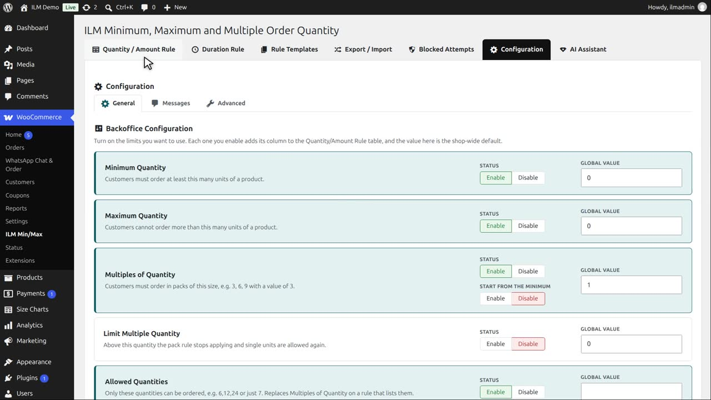
Because it is enabled, the Quantity and Amount Rule tab shows a Min Qty column for every product.
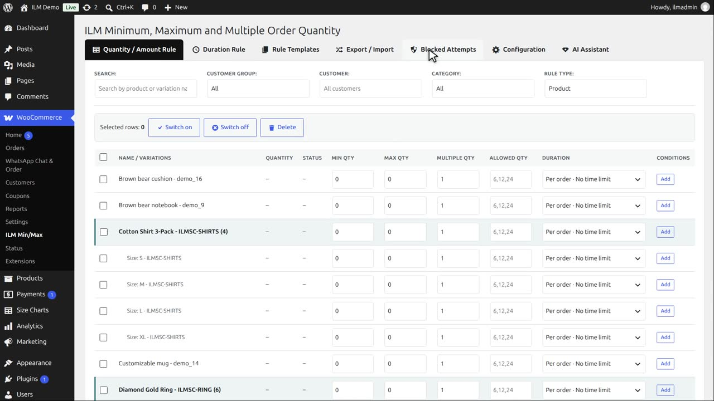
Now click Disable. The change is saved straight away.
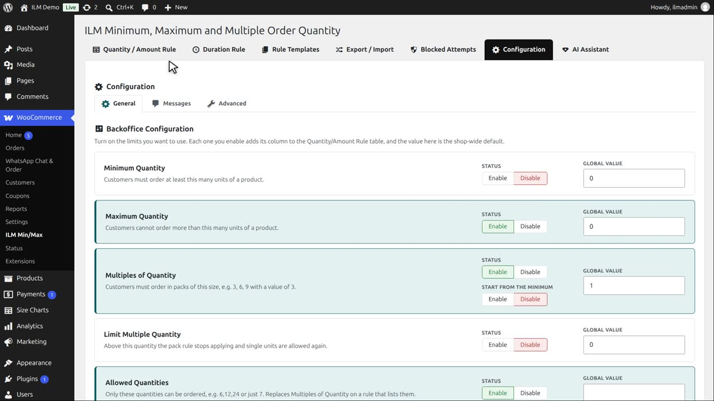
Back on the rule table, the Min Qty column is gone, and no minimum is checked anywhere in the shop.
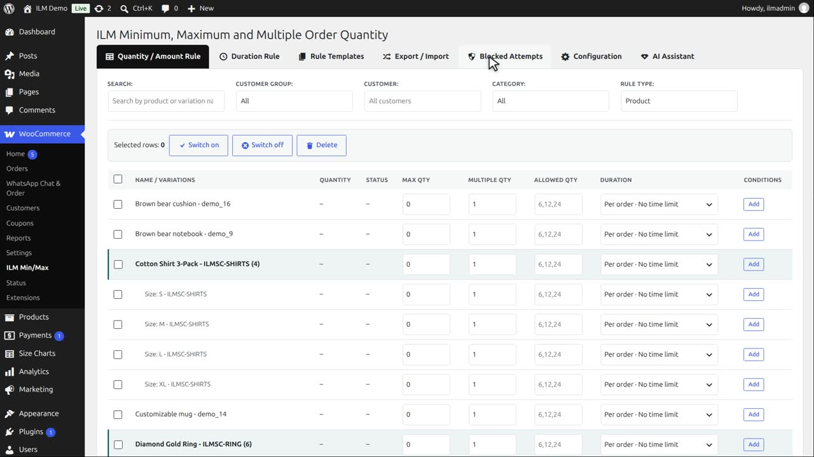
Click Enable to switch it back on.
The column is back. Let us give the Mountain fox notebook a minimum. Search for it.
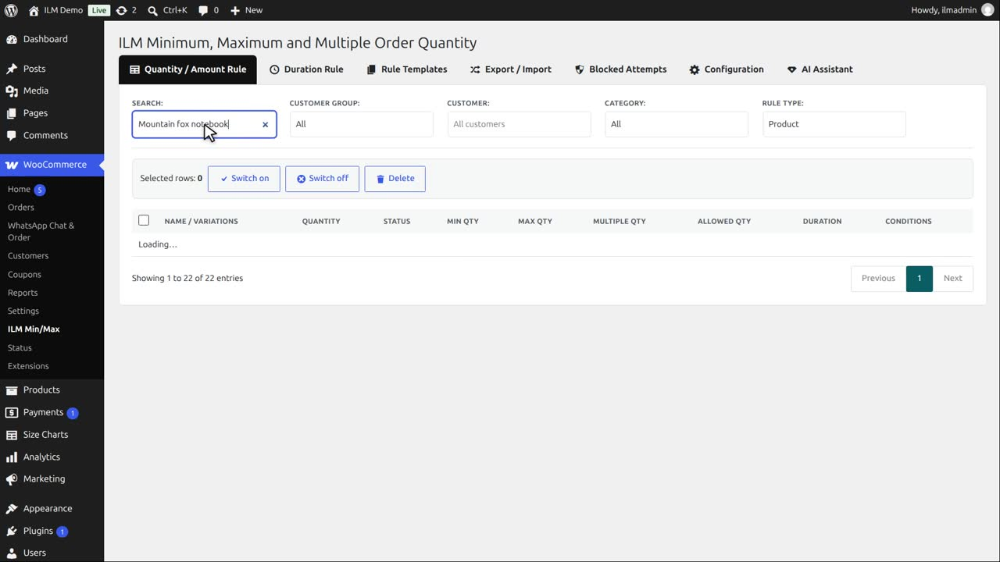
Type three in Min Qty and click away. The rule is saved and active.
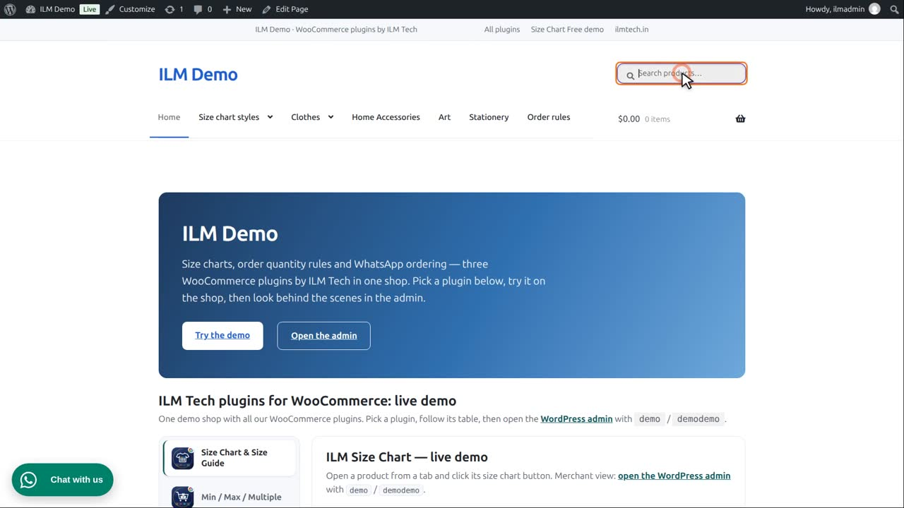
On the product page, the customer sees: minimum order three. The quantity box already starts at three.
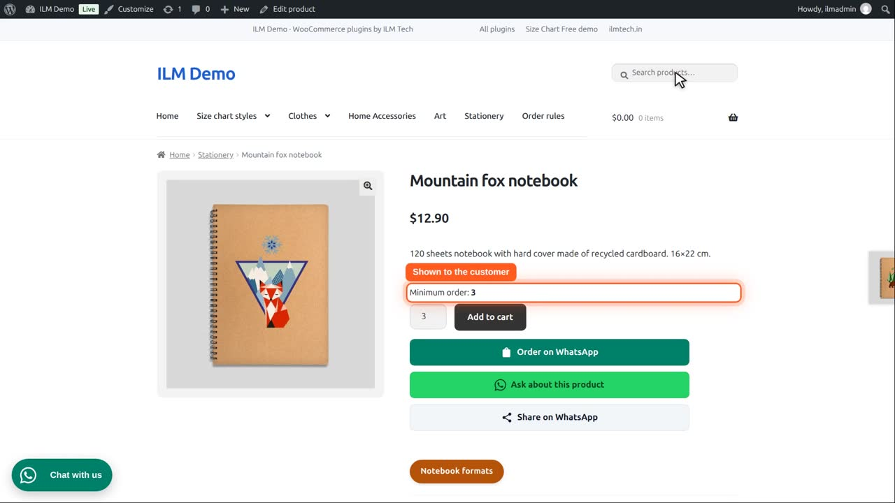
If they type one and click Add to cart, the box itself asks for three or more.
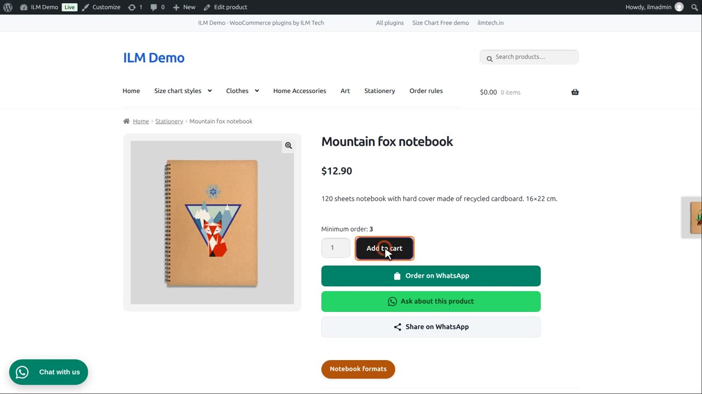
With three, the product goes into the cart.
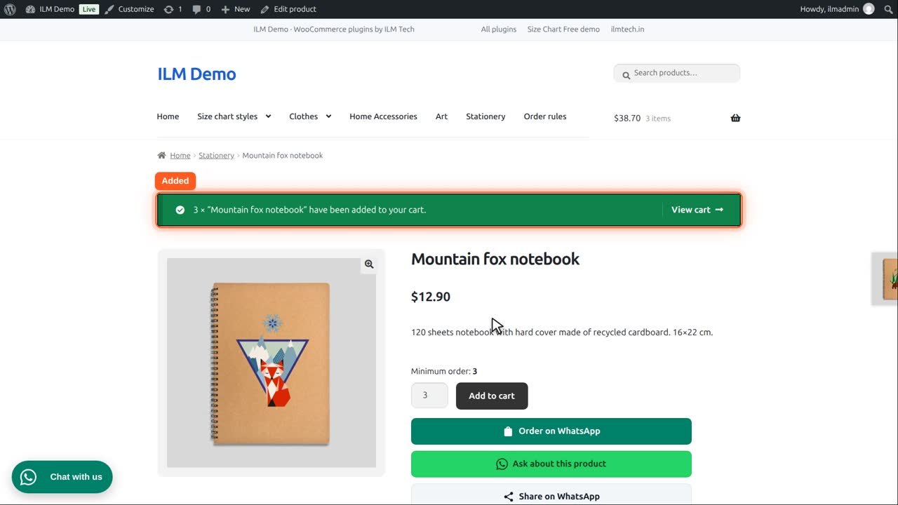
In the cart, the quantity is three.
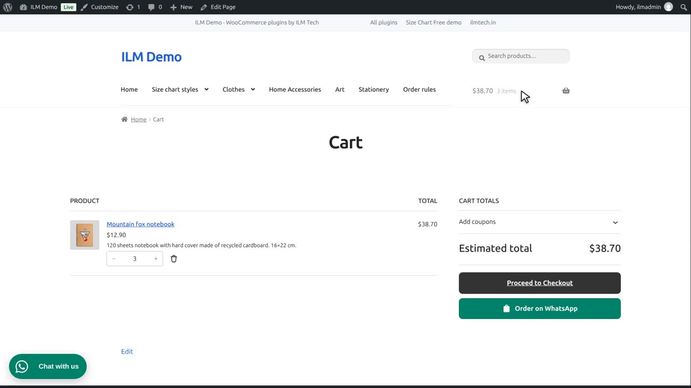
Now they try to lower it to two. The cart keeps three: the order can never go below the minimum.
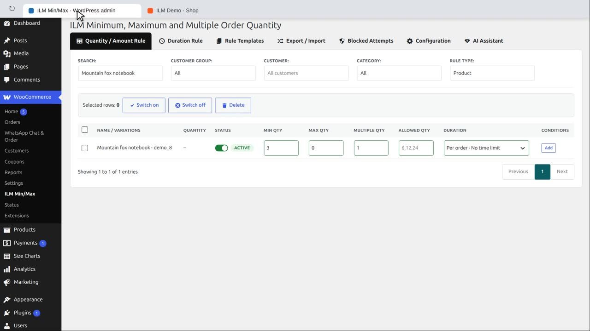
Finally, the global value on the card is the minimum for every product that has no rule of its own. It is shown in the Global rule video.